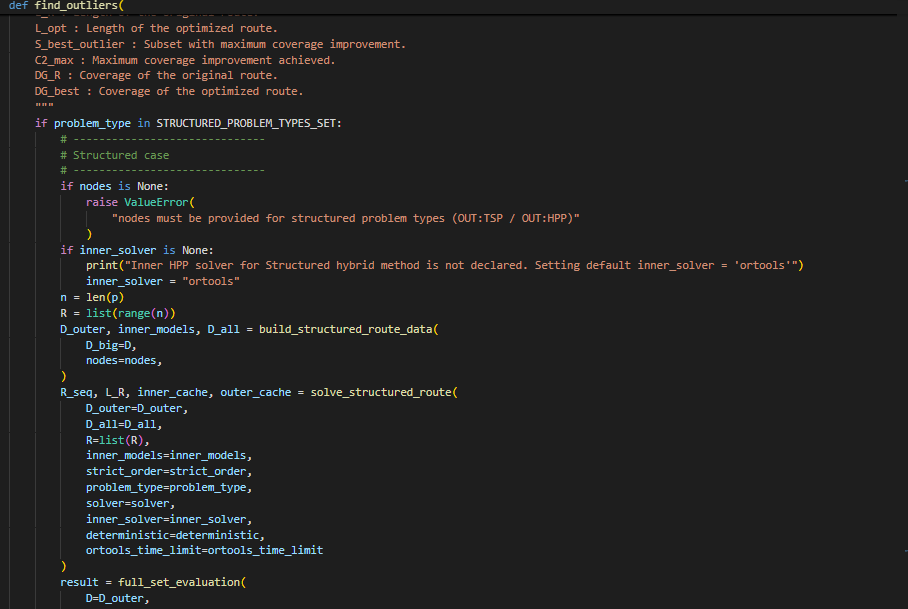
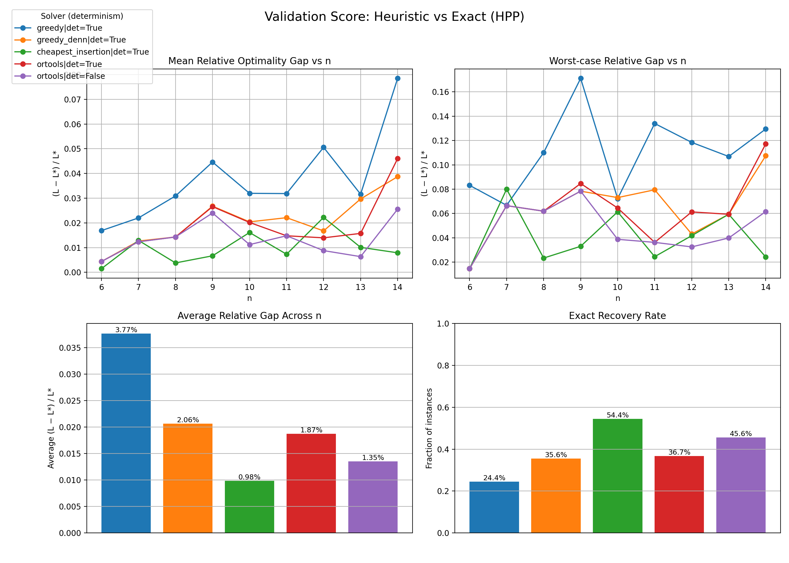
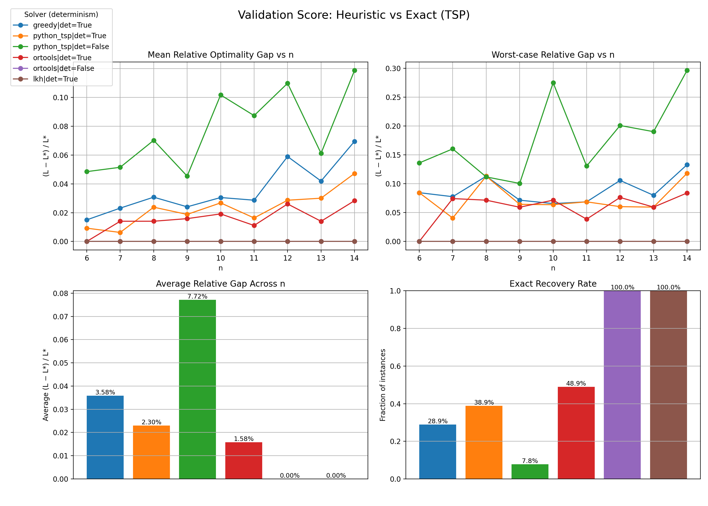
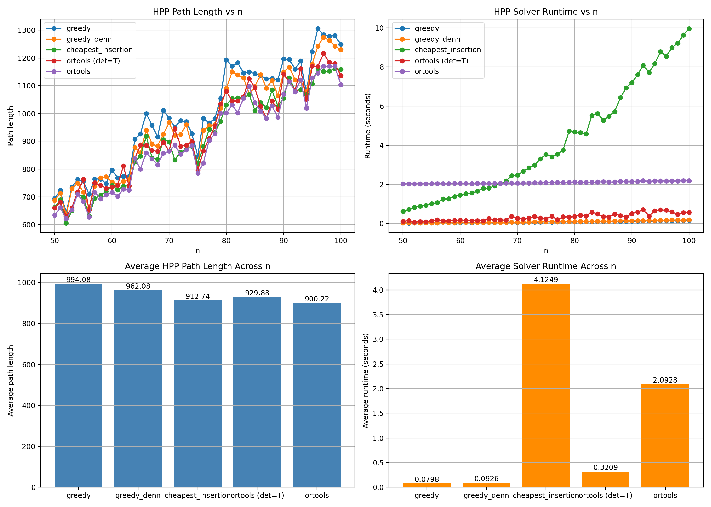
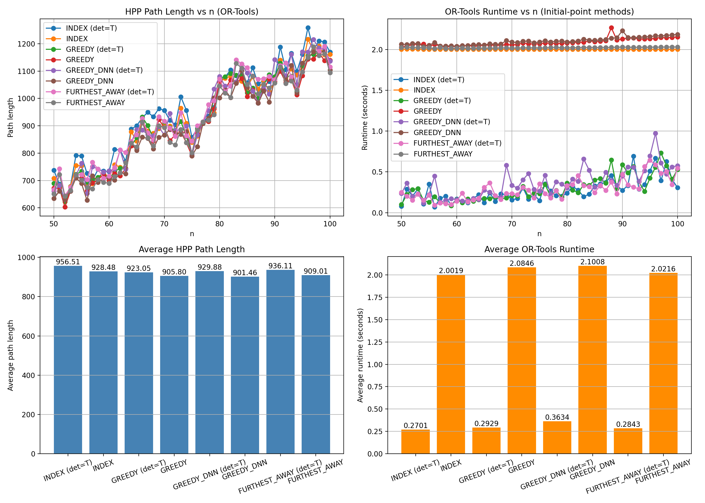
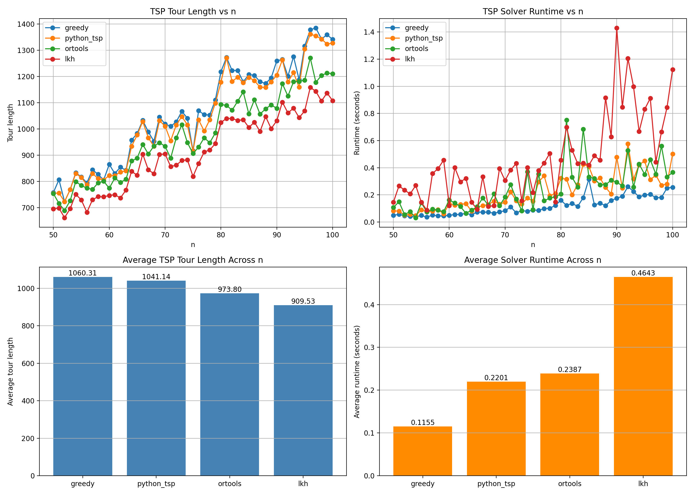
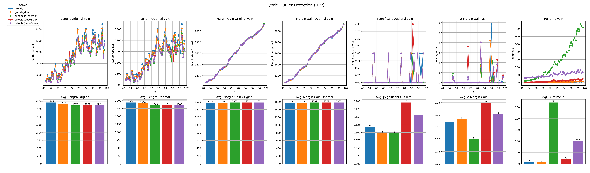
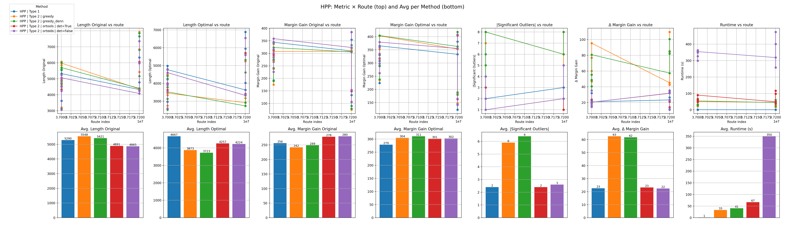
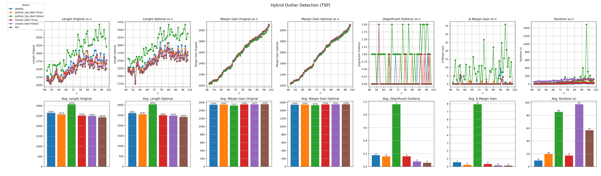
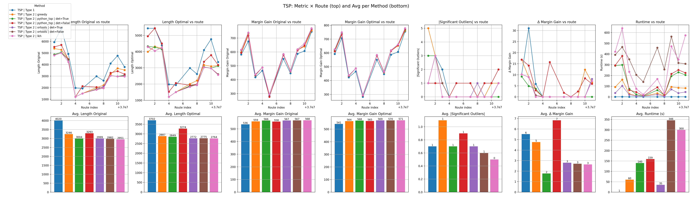

From Marginal Cost to Outlier Detection
The implemented solution starts with an exact route-removal model in
core_algorithm.py. Type 1 keeps the route order fixed, Type 2 re-optimizes the remaining
route, and the hybrid method extends the same economic definition when exact enumeration becomes too
expensive.

The solution starts with the simplest possible operation: remove a candidate subset and measure what happens. That removal changes both the served revenue and the route length. The two Type definitions are about whether the surviving route is allowed to keep its original order or whether it should be re-solved.
In code, the exact reference implementation lives in
libraries/utils/algorithm/single_route/core_algorithm.py as
find_outliers. The hybrid continuation in the same solution pipeline is the companion function
find_outliers_hybrid.
From definition to search
We now know what an outlier is mathematically. The next problem is finding it.
Every algorithm on this page is built around the same core operation: choose a candidate removal, evaluate the remaining route and measure the marginal economic effect.
The repository implements this logic through two closely related entrypoints. One explores the subset space exhaustively. The other keeps the same economic definition but expands the subset space selectively.
find_outliers
full_set_evaluation on the exact subset space.find_outliers_hybrid
run_hybrid_candidate_generation.Type 1 - Fixed Sequence
Consider a route \(A \to B \to C \to D \to E\). If \(C\) is removed, the fixed sequence simply reconnects the surviving vertices as \(A \to B \to D \to E\).
This is the Type 1 view: the order is preserved and only the removed vertices disappear.

Type 1 asks a conservative question: if the current route order is kept exactly as it is, does removing a subset improve the contribution margin?


That is why the code can evaluate Type 1 directly by using the fixed route length function.
For Type 1, \(L(R \setminus S)\) is measured under the preserved order. The sequence is not re-solved.
Type 1 therefore asks whether \(S\) is harmful in the route we currently operate.
The code path that matches this logic is the strict-order branch in
route_solver.py and route_length_type1.
Type 2 - Optimized Sequence
Fixed-order evaluation gives us a useful operational baseline. But it also inherits every inefficiency already present in the route. What if the route order itself is part of the problem?
Type 2 removes that bias. After removing the subset, the remaining route is solved again as a TSP or HPP / SHPP instance depending on the configuration.
This makes the question sharper:
Type 2 asks whether a route unit is harmful even after the surviving route has been arranged efficiently.
That difference is important. A unit can look acceptable under the current route order but still become a clear outlier once the route is re-optimized.


| Question | Type 1 | Type 2 |
|---|---|---|
| Can the order change? | No | Yes |
| What is measured? | The impact of removal in the current route | The impact of removal after re-optimization |
| Interpretation | Operational baseline | Sharper structural diagnosis |
In the implementation, this is the non-strict branch of solve_route and, for structured routes, solve_structured_route.
Route Solvers
Type 2 introduces a new computational requirement. Every evaluated removal may require us to solve the remaining route again. Once the order is allowed to change, each candidate removal becomes a routing problem of its own.
That is the point where route optimization enters the outlier story directly. Closed routes lead to TSP style problems. Open routes lead to HPP or SHPP style problems.
The algorithmic layer therefore needs a family of route solvers rather than a single distance calculation rule.
| Problem type | Supported backends | Relevant module |
|---|---|---|
| TSP | greedy, python_tsp, ortools, lkh, exact | libraries/utils/algorithm/solvers/tsp.py |
| HPP | greedy, greedy_denn, cheapest_insertion, ortools, exact | libraries/utils/algorithm/solvers/hpp.py |
| Type 1 length | Fixed order only | libraries/utils/algorithm/solvers/type1.py |
| Structured OUT:TSP / OUT:HPP | Outer solver + inner HPP solver | libraries/utils/algorithm/single_route/route_solver_structured.py |
The important point for the solution story is that the economic outlier criterion stays the same. What changes across Type 1 and Type 2 is how the surviving route length is computed.
Which solver should we trust?
The project keeps several solver backends because the route subproblems are not all alike. Some solvers are lightweight constructive heuristics, some are stronger local-search engines, and some are kept as exact references for validation.
| Solver | Main idea | Typical use in this project | Role |
|---|---|---|---|
greedy |
Nearest-feasible extension from the current route position. | Fast baseline for TSP and HPP route re-optimization. | Heuristic baseline |
greedy_denn |
Project-specific greedy construction for open-path routing. | HPP-focused heuristic when endpoint structure matters. | Heuristic |
python_tsp |
Library-based TSP search with deterministic and non-deterministic variants. | TSP optimization in non-structured Type 2 evaluation. | Heuristic |
cheapest_insertion |
Incremental insertion where each added unit causes the smallest route increase. | Constructive HPP heuristic. | Heuristic |
ortools |
Routing-based guided search through the OR-Tools backend. | General-purpose default for TSP, HPP and structured inner solves. | High-quality practical solver |
lkh |
Lin-Kernighan-Helsgaun style local search for TSP instances. | High-quality TSP route construction and validation. | High-quality heuristic |
exact |
Provably exact optimization on small enough instances. | Validation, benchmarking and theoretical reference cases. | Exact benchmark |
Heuristic performance relative to exact solvers
The route solver is called repeatedly inside Type 2 evaluation and inside the hybrid search. That makes solver choice part of the algorithm itself, not just an implementation detail. The exact solver gives the reference point, but the practical question is which heuristic stays close enough to that reference while still being fast enough to support many subset evaluations.
Quality relative to the exact baseline

cheapest_insertion achieves the smallest average gap to the exact
solver, while non-deterministic ortools remains close and also recovers the exact solution
on a substantial share of instances.

lkh and non-deterministic ortools match the exact solver
across the plotted cases, while deterministic ortools stays close enough to remain
operationally attractive.
These plots establish the first part of the story: moving away from the exact solver does not mean giving up all structure or quality. It means accepting a controlled approximation whose size can be measured.
Runtime under repeated route evaluation
The second part of the story is runtime. In the outlier search, the solver is not run once on a single route. It is run again and again on many nearby subproblems. The relevant benchmark is therefore not only solution quality, but solution quality per unit time.



Read together, these figures explain why ortools becomes the practical workhorse. Once the
instance size moves beyond about n > 10, it gives the best overall compromise between
runtime and route quality while still staying close to the exact reference.
SHPP, the start-point study adds an extra lesson: stability is not only about the solver backend, but also about how the open path is initialized.
What this means for hybrid search
The hybrid algorithm inherits exactly these trade-offs. Its exact core is only useful if the surrounding heuristic expansion can evaluate many candidates quickly without drifting too far from the exact economics.
The figures without routes in their name are benchmarks on simulated data. The
figures with routes in their name are the corresponding measurements on real route
instances.




Across all of these benchmarks, the operational conclusion is consistent. ortools is
generally the best default when the algorithm must balance route quality, runtime and repeated subset
evaluation.
lkh remains the strongest TSP heuristic when pure tour quality is the primary
objective, but its runtime profile makes it a poor default once the instance size grows beyond about
n > 100. That is why the implementation keeps several solver backends available, but leans
on ortools as the most robust production-facing compromise.
Why subsets matter
The interesting object is not always a single address. Two addresses can be individually weak yet still not clear the threshold alone, while the pair together may become a meaningful economic removal. That is why the algorithm searches over \(S \subseteq R\), not just over single vertices.
Once Type 1, Type 2 and the route solvers are in place, this is the next unavoidable consequence: the search problem is about subsets, not isolated vertices. Even if every single address can be evaluated, the economically relevant object may still be a pair, a block or a larger local structure.
Subset interactions are the reason this is an outlier-detection problem rather than a simple ranking problem. The economics can change when units are considered together.
Exact Search
We now have a definition, a way to evaluate removals, and a route solver layer. The theoretically clean strategy is therefore exhaustive: for every \(S \subseteq R\), solve the remaining route, calculate \(C_2(S)\) and classify the subset.
Only after that conceptual algorithm is clear does it make sense to mention the code entrypoint:
find_outliers delegates the exhaustive work to full_set_evaluation, then sends
the evaluated subsets into run_outlier_postprocessing.
| Number of route units | Possible subsets | Reason this matters |
|---|---|---|
| 10 | 1,024 | Still manageable for exhaustive evaluation. |
| 20 | 1,048,576 | Already expensive without pruning. |
| 30 | 1,073,741,824 | Too large for naive enumeration in a practical workflow. |
The definition scales. Exhaustive search does not.
The mathematics is still simple. The number of subsets is not. Once subsets become the relevant object, the theoretical search space grows as \(2^{|R|}\).
| Number of route units | Possible subsets | Interpretation |
|---|---|---|
| 10 | 1,024 | Still manageable for exhaustive evaluation. |
| 20 | 1,048,576 | Already costly when every subset needs route evaluation. |
| 30 | 1,073,741,824 | Too large for naive exhaustive search in a practical workflow. |
Since search space grows as \(2^{|R|}\) we need a better way to select the subset \(S\subseteq R\) that we are searching without changing the economic definitions.
Hybrid Search
Hybrid search is introduced at exactly this point. It does not redefine an outlier. It changes which subsets are selected for evaluation once exhaustive search becomes too expensive.
Only after that motivation is in place do we need the implementation name: in
core_algorithm.py, the corresponding entrypoint is find_outliers_hybrid.
It begins from exact small subsets and then expands the candidate set through several structural methods.
Exact evaluation of small subsets
The hybrid implementation begins with an exact core: all subsets with size up to k_all are
evaluated exhaustively. This is handled by full_set_evaluation, which calls the shared
evaluate_subset kernel for every combination in that size range.
The first phase is exact, not approximate. It is the local ground truth that the later heuristic steps build on.
Method A - Peripheral clusters
Peripheral geometry can reveal groups that are cheap internally but expensive to connect to the rest of the route. Method A therefore searches for small route-unit clusters that behave like detachable boundary structures.
The code implements this through greedy_peripheral_clusters, which grows local groups using a
threshold \(\tau\) estimated from the scale of the current route.
In the implementation, this threshold can be selected in two ways through
method: Optional[Literal["kneedle", "relative"]].
Both choices try to detect where short local connections end and unusually long bridge edges begin.
| Method | How \(\tau\) is chosen | Interpretation |
|---|---|---|
kneedle |
Apply knee detection to the sorted route-edge lengths and use the detected bend point as threshold. | Chooses the transition where ordinary local edges start giving way to longer connector edges. |
relative |
Scan the sorted route-edge lengths and stop at the first sufficiently large relative jump. | Chooses the first edge scale that looks disproportionately larger than the preceding local scale. |
The idea is structural: if a cluster sits at the perimeter of the route, removing it may save more travel than its local revenue justifies.
Method B - Marginal blocks
The route order itself contains local economic information. Method B therefore scans along that order and accumulates contiguous blocks with weak marginal contribution.
The helper find_marginal_blocks estimates a local quantity \(\Delta DG(i)\) for each unit
and then builds windows whose cumulative score remains promising.
This matters because several adjacent route units can form a weak block even when none of them is individually decisive.
Method U - Union-based expansion of promising subsets
Methods A and B can reveal separate promising local structures. Those structures may become even more important when they are removed together. Method U therefore combines already promising subsets into larger candidate removals.
In the implementation, run_union_candidate_generation builds pruned unions and evaluates
every unseen combination with the same economic kernel as the rest of the pipeline.
This is useful when multiple local weaknesses become more important when considered together.
Beam Search
Exact search explores everything. Methods A, B and U create promising structures. Beam Search is the final controlled expansion step: it explores around the best of those structures without letting the candidate space explode again.
The implementation starts from strong subsets, expands them by one unit at a time and retains only the
best B candidates at each depth.
| Step | What the code does |
|---|---|
| Seed | Start from exact small subsets and other high-quality generated candidates. |
| Expand | Add one new route unit to each promising subset. |
| Score | Evaluate \(C_2(S)\) after solving the remaining route. |
| Keep | Retain only the top \(B\) candidates before moving to the next depth. |
Pre-check and pruning
Type 2 route solving is expensive. That is why the algorithm can optionally use a cheaper Type 1 evaluation as an early screen before committing to full re-optimization work.
When precheck=True, candidates that already look weak under the fixed-sequence test can be
dropped early.
The pre-check does not redefine the objective. It only avoids spending full solver time on candidates that already fail a cheaper lower-resolution screen.
Outlier Engine
We now have all the pieces. The Outlier Engine is where they become one algorithm.
This is the orchestration layer that combines route solving, candidate generation, subset evaluation and final classification.
evaluate_subset and economic scoringdetect_outliers and significance logic| Role | Code representation |
|---|---|
| Exact entrypoint | find_outliers |
| Hybrid entrypoint | find_outliers_hybrid |
| Subset distance effect | compute_cost_change |
| Subset economic effect | compute_coverage_change |
| Shared evaluation kernel | evaluate_subset |
| Exact exhaustive phase | full_set_evaluation |
| Classification | detect_outliers |
| Final result construction | run_outlier_postprocessing |
Each search method answers a different candidate-generation question. The Outlier Engine is where those candidates are finally evaluated against one common economic definition.
Complexity and guarantees
The final question is what remains exact and what becomes heuristic once the complete algorithmic layer is assembled.
| Part | Exact or heuristic? | Guarantee level |
|---|---|---|
| Economic evaluation on evaluated subsets | Exact | Uses the shared economic kernel once a subset reaches evaluation. |
| Configured exhaustive small-subset search | Exact | Exact for the configured subset-size limit. |
| Exact route solver when selected | Exact | Route re-optimization is exact on instances where the exact backend is used. |
| Method A candidate generation | Heuristic | Structural candidate discovery only. |
| Method B candidate generation | Heuristic | Contiguous-window approximation. |
| Method U expansion | Heuristic | Combines already promising subsets into larger candidates. |
| Beam Search | Heuristic | Controlled expansion with bounded beam width. |
| Heuristic route solvers where selected | Heuristic | Quality depends on backend, determinism setting and instance class. |
We now have the complete algorithmic layer. The final question is how data enters this layer and how its results become an operational output.